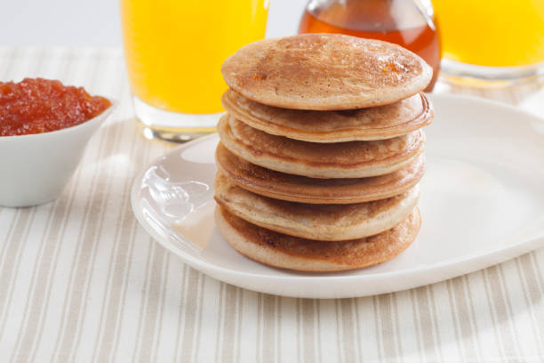

Odin Recipes
This will be a list of recipes for fast and easy foods to make when you don't have a lot of time or are just plain lazy.
More will be added in the future. For now, here's the list:
Chicken Soup
Fish Taco
Monkey Cake
Pancakes

Pizza Dough